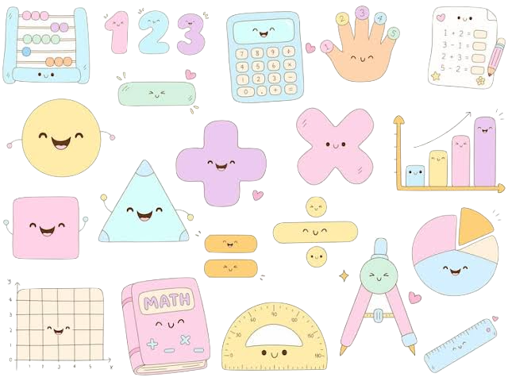

Connect Four Game (Python) | Fall 2024
- Built an interactive Connect Four game in Python implementing core game mechanics and control flow.
- Developed win-condition algorithms and turn-based logic for player-vs-computer gameplay.
- Applied debugging and testing techniques to ensure stable and accurate game behavior.
Text Classification Model (Python) | Fall 2024
- Developed a statistical text classification model to compare and categorize text samples.
- Engineered features including word frequency, sentence length, and stemming-based metrics.
- Applied probability and data analysis concepts to support accurate classification.
Sudoku Solver (Java) | Spring 2025
- Developed a Sudoku solver application using Java and VS Code.
- Implemented recursive backtracking algorithms to generate valid solutions.
- Reinforced object-oriented design and algorithmic problem-solving.
Javascript Calculator
